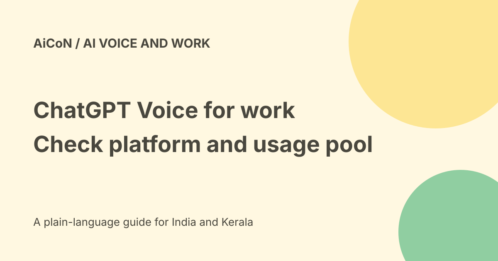

ChatGPT Voice in Work and Codex: platforms and usage limits
OpenAI documents Voice for starting and coordinating tasks in ChatGPT Work and Codex. Current official pages do not fully agree on platform scope: the Voice help page says desktop with paired iOS remote access, while newer release notes also describe Voice in Work on web and mobile. Check your actual account before relying on either route.

What task-oriented Voice does
The Voice help page says you can start, prioritise, interrupt or redirect tasks, check progress and coordinate work across active conversations and projects.
It uses the tools and permissions available to the selected Work or Codex experience. Speaking does not bypass account permissions, workspace controls or the need to review a consequential action.
Voice in Chat is a different experience
A conversational Voice session can be useful for questions and brainstorming. Voice in Work and Codex is described as coordinating tasks and using supported connected context.
Do not assume the same model, tool access or allowance applies to every Voice surface. Dictation that turns speech into typed text is also different from a live spoken conversation.
The platform discrepancy
The dedicated Voice help page currently says Work and Codex Voice is available in the desktop app on macOS and Windows, with paired iOS remote access. It says standalone web or mobile use is not available.
The release notes include an earlier desktop launch, then a 25 September 2026 update saying Voice is also available in Work on web and mobile. That update discusses plugins and says access requires both Voice and Work.
These statements conflict for Work. The newer entry does not by itself establish standalone Codex Voice on every mobile device. We preserve the discrepancy rather than merging it into one universal availability claim.
Models and interface can change
Release notes say Voice can use GPT-5.6 or GPT-6 Astra for harder questions, depending on plan, with model and reasoning controls similar to text.
The dedicated help page also describes GPT-Live variants and older intelligence controls. A dated announcement is not a permanent model entitlement. Read the current picker and account limits before choosing.
Separate usage allowances
The dedicated help page says Work and Codex Voice uses separate allowances and pricing. It lists approximately six credits per minute for Business and Enterprise flexible-pricing workspaces, and about forty-five minutes per five-hour window for legacy Enterprise.
Delegated tasks draw from the shared pool at standard rates. The same page has different limits and a five-credit-per-minute description for ordinary Live in some workspaces. Those are different sections, not one interchangeable price.
No paid subscription, credit top-up or final INR quote was verified here. Check the exact plan and session counter, especially when spoken coordination starts additional work.
A low-risk first task
- Update the official app or open the supported account surface.
- Check whether Voice and Work or Codex are actually available.
- Review microphone and connected-app permissions.
- Start with a non-sensitive request for an outline or draft.
- State the desired result and any limits clearly.
- Read the transcript and clarify recognition errors.
- Review the output and its sources.
- Approve recipients, changes or spending separately when required.
- Stop or mute the microphone when finished.
No account was signed into, voice call started or app connected for this guide. These are preparation steps, not tested menus.
Deep research and editable outputs
The archived post also refers to research and editable deliverables. That is separate from proving Voice access, the accuracy of a cited result or a completed document.
Ask for sources and inspect the actual file. An output can have plausible citations, incorrect numbers or missing context. Do not send an unreviewed report merely because it was requested by voice.
Privacy and recordings
The help page describes controls for sharing audio and video clips for training in personal workspaces, and says such sharing is not available for Business, Enterprise or Edu Voice conversations.
Read the actual data controls and your organisation's rules. Avoid confidential meetings, private documents or other people's speech without appropriate permission. Microphone access is not consent from everyone nearby.
India and workspace access
No particular Indian account or tenant was tested. Workspace settings can affect access; the dedicated help says Enterprise Work and Codex Voice needs Voice and Early Model Access enabled.
Free or Go conversational Voice access does not by itself grant Work. The newer release note explicitly requires both Voice and Work access for task-oriented use.
What changed since the original post?
We preserve confirmed desktop task coordination while adding the newer Work web/mobile entry and the unresolved help-page conflict. We separate Voice surfaces, plan limits and delegated-work charges instead of promising one universal rollout.
Frequently asked questions
Is standalone mobile Codex Voice established?
Not by the newer Work web/mobile wording alone.
Are all Voice minutes billed identically?
No. Surface, plan and shared work allowances matter.
Was a session tested?
No.
Sources: Current dedicated Voice help · Official ChatGPT release notes · Official Codex changes. Checked 7 October 2026.